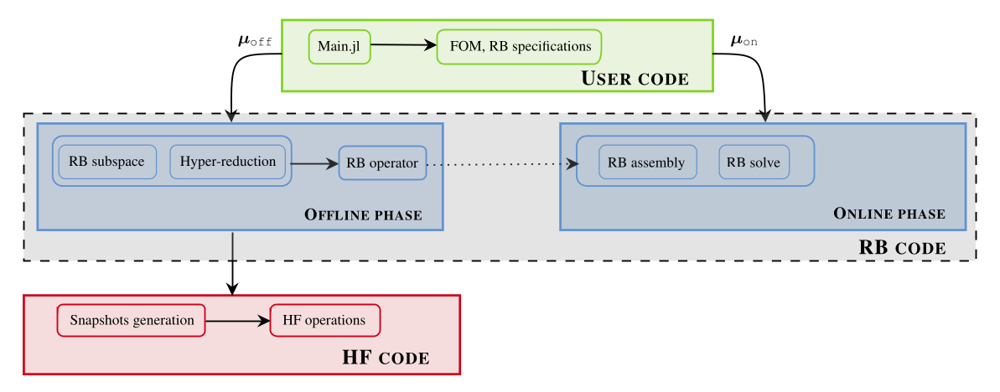
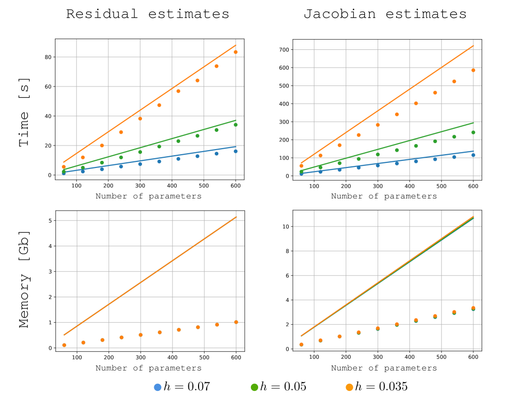
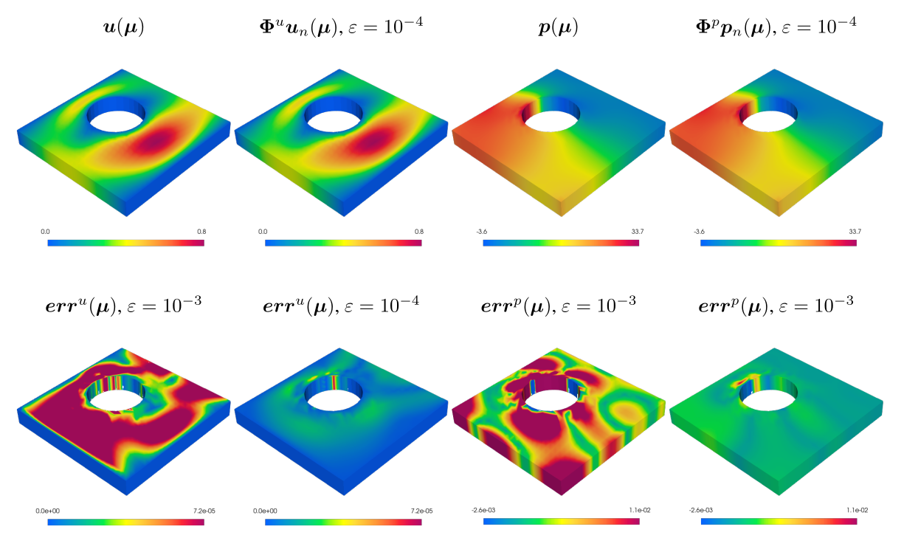
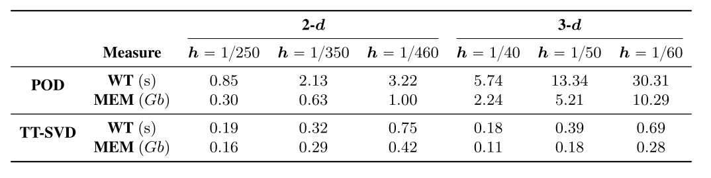
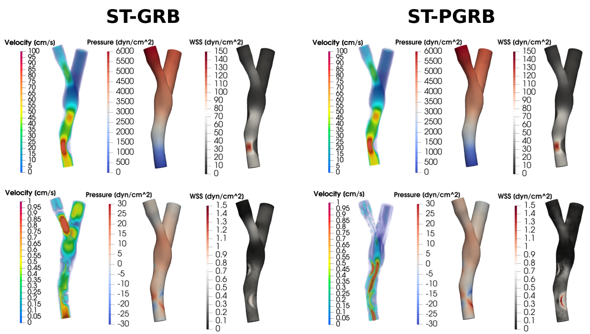
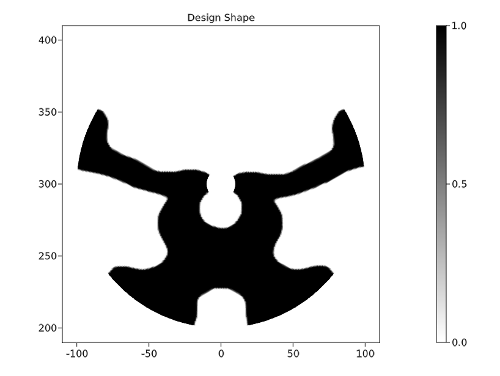
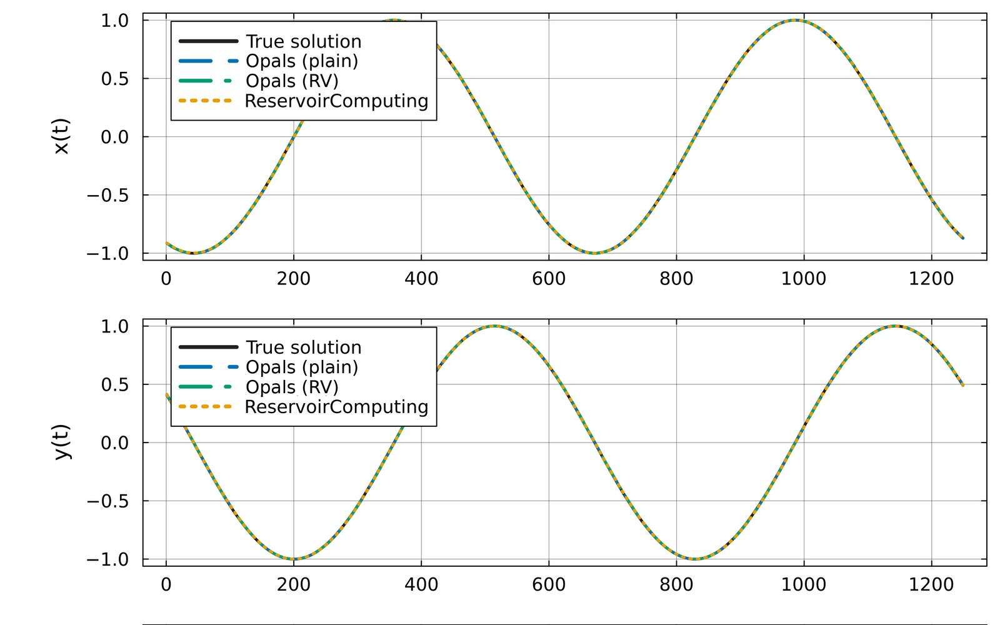
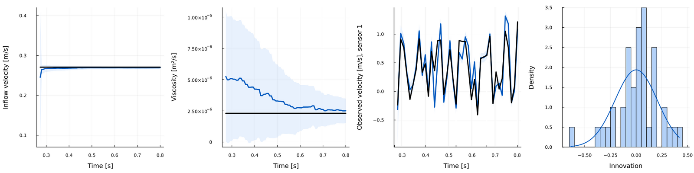
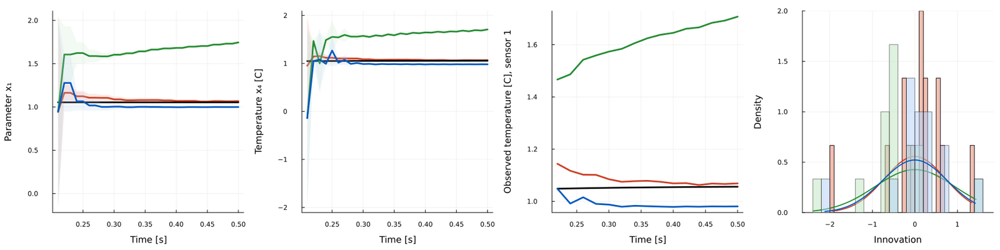

Software platform
A full reduced-order modelling library in Julia
GridapROMs.jl keeps reduced-order methods fast without the codebase turning into something only I can read.
Achievements

Software platform
GridapROMs.jl keeps reduced-order methods fast without the codebase turning into something only I can read.

Performance engineering
Building the training data for a reduced model is usually the slow part. Lazy evaluation and distributed workflows brought that cost down significantly.

Geometric flexibility
Combined unfitted finite elements with reference-domain mappings so a changing geometry doesn't force a remesh every time.

Compression strategy
Tensor-based workflows that cut both runtime and memory when building reduced spaces and hyper-reduced operators.

Transient problems
Methods for unsteady PDE problems that are cheaper to run without giving up the accuracy an engineer would actually need.

Industrial R&D
A Matlab code for compliant mechanisms in satellite hardware, built around constraints that came from actual mechanical testing, not just theory.

Reservoir computing
Wrote the echo-state network for Opals.jl's bias correction from scratch instead of depending on ReservoirComputing.jl, the usual go-to in Julia. With recycle-validation training it comes out both more accurate and cheaper to train. That kind of comparison matters if you take reservoir computing seriously as a field in its own right, not just as a footnote to deep learning.

Data assimilation
An ensemble Kalman filter recovers the inflow velocity and viscosity of a turbulent Navier-Stokes flow (~6500 DOFs) from sparse, noisy sensors. The innovation statistics check out too: they come out about as Gaussian as the filter assumes.

ROM-accelerated forecasting
A GridapROMs.jl surrogate drops into an Opals.jl assimilation loop in place of the full finite-element solver, with no change to the driver code. Memory use drops roughly 15x, and kriging calibration recovers most of the accuracy that would otherwise be lost.